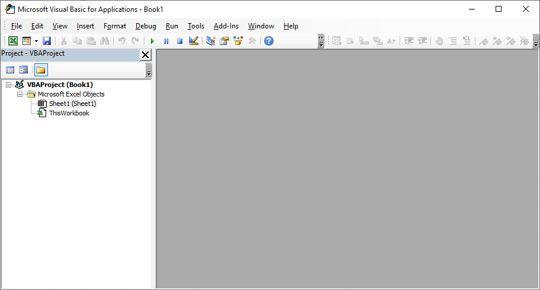

Prerequisites:
- You should have Windows 8 OS or later
- You should have Office 2010 or later installed in your system
-
Ensure that your Microsoft Excel version has support for Macros.
You can test it by bringing up the Macro window by pressing Alt+F11
key. If the VBA Editor window opens, rest assured that there is support for Macro.
